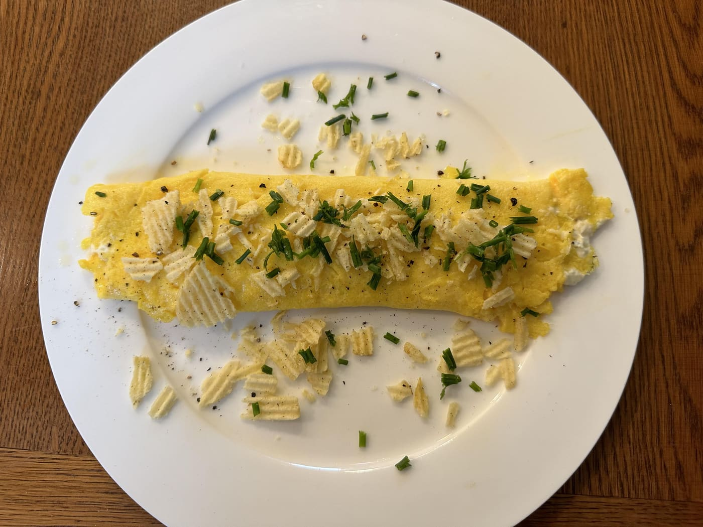
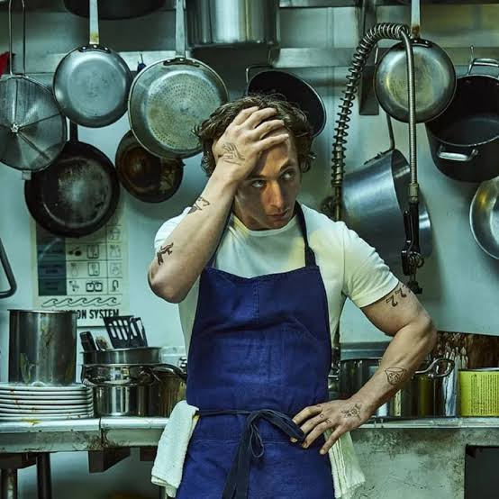

«Медведь» · сериал, 2022Омлет с чипсами
Нежный омлет с хрустящими чипсами и зеленью. Быстрый завтрак в стиле ресторанной кухни.
Ингредиенты
- 3 яйца
- 30 г сливочного сыра
- горсть чипсов
- зелёный лук
- соль и перец
Шаги
- Взбейте яйца с солью и перцем.
- Обжарьте омлет на среднем огне 2–3 минуты.
- Выложите сливочный сыр и сверните омлет пополам.
- Посыпьте раскрошенными чипсами и зелёным луком перед подачей.